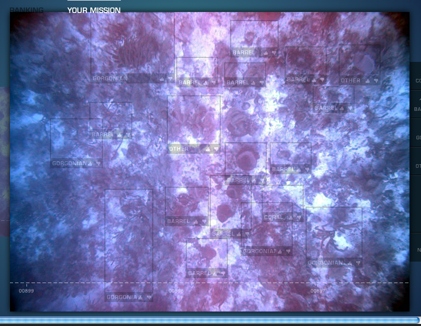

Tornado
python async web framework
@javisantana · bcndevcon
| z, ? | toggle help (this) |
| space, → | next slide |
| shift-space, ← | previous slide |
| d | toggle debug mode |
| ## <ret> | go to slide # |
| c, t | table of contents (vi) |
| f | toggle footer |
| r | reload slides |
| n | toggle notes |
| p | run preshow |
@javisantana · bcndevcon


OS_register(socket_fd, READ)
...
while True:
events = OS_get_events() #epoll, select...
for fd, event_type in events:
fn = callback_for(fd, event_type)
fn() import tornado.ioloop
import tornado.web
# controller
class MainHandler(tornado.web.RequestHandler):
def get(self):
self.write("Hello, world")
# router + settings
application = tornado.web.Application([
(r"/", MainHandler),
])
if __name__ == "__main__":
application.listen(8888)
tornado.ioloop.IOLoop.instance().start()$ curl -i http://localhost:8888
HTTP/1.1 200 OK
Content-Length: 12
Etag: "e02aa1b106d5c7c6a98def2b13005d5b84fd8dc8"
Content-Type: text/html; charset=UTF-8
Server: TornadoServer/2.1.1
Hello, world
<!-- index.html -->
<html>
<h1>{{msg}}</h1>
</html>class MainHandler(tornado.web.RequestHandler):
def get(self):
self.render("index.html", msg="hello!")$ curl -i http://localhost:8888
HTTP/1.1 200 OK
Content-Length: 32
Etag: "3e7020fdb7b87ef428cbdd140c96217044748c27"
Content-Type: text/html; charset=UTF-8
Server: TornadoServer/2.1.1
<html>
<h1> hello!</h1>
</html>
class JSONHandler(tornado.web.RequestHandler):
def get(self):
self.write({'msg': "hello!"})
application = tornado.web.Application([
(r"/", MainHandler),
(r"/json", JSONHandler),
])$ curl -i http://localhost:8888/json
HTTP/1.1 200 OK
Content-Length: 17
Etag: "4d34dd0d61eba5957a5ca36846f974697c730a22"
Content-Type: application/json; charset=UTF-8
Server: TornadoServer/2.1.1
{"msg": "hello!"}
no limits, just python code
{% for student in
[p for p in people
if p.student and p.age > 23] %}
<li>{{ epic_function(student.name) }}</li>
{% end %}
SEARCH = "http://search.twitter.com/search.json?q=bcndevcon"
class APIHandler(tornado.web.RequestHandler):
@tornado.web.asynchronous
def get(self):
http = tornado.httpclient.AsyncHTTPClient()
http.fetch(SEARCH,
callback=self.async_callback(
self.on_response # <== call here when done
)
)
def on_response(self, response): # <== HERE!
json = tornado.escape.json_decode(response.body)
self.write({
"twits": [x['text'] for x in json["results"]]
})
self.finish()$ curl http://localhost:8888/api | python -m json.tool
{
"twits": [
"Llegando a la. #bcndevconf A conocer a Lucia @wiseri :-)",
"De camino a #bcndevconf. Tres d\u00edas de congreso en el museo mar\u00edtimo de barcelona. A ver q tal",
"On my way to BCN with @davideme and tomorrow BCNDevConf!",
"@wulczer vas a estar t\u00fa en la bcndevconf hablando de ducksboard?",
"In extremis, per\u00f2 l'equip de @shopsial acaba de comprar els early tickets per el #bcndevconf Ens veiem all\u00e0 la setmana que ve!!",
"@ValentiGoClimb @bcndevconf see you there!",
"+1 RT @ValentiGoClimb: i will be in @bcndevconf on Saturday 19! #bdc11",
"i will be in @bcndevconf on Saturday 19! #bdc11"
]
}
// websocket.html
window.onload = function() {
var WS = typeof WebSocket === 'function' ? WebSocket : MozWebSocket;
var ws = new WS("ws://localhost:8888/api");
ws.onopen = function() {
ws.send("Hello");
};
ws.onmessage = function (evt) {
var h = "<h1>" + new Date().toString() + "</h1>";
h += "<ul>";
JSON.parse(evt.data).twits.forEach(function(r) {
h += "<li>" + r;
});
h += "</ul>";
document.body.innerHTML = h;
};
}# websocket handler
# clients
clients = [] #<= 1 thread!
class APIWebSocket(websocket.WebSocketHandler):
def open(self):
clients.append(self) # <= add the client to the list
def on_message(self, message):
print message
def on_close(self):
print "client diconnected"
#TODO: remove the client from clients list
# route
application = tornado.web.Application([
(r"/api", APIWebSocket),
])# get tweets task
def check_twitter(s='bcndevcon'):
http = tornado.httpclient.AsyncHTTPClient()
http.fetch("http://search.twitter.com/search.json?q=" + s,
callback=new_twitts) #<= callback
# setup a periodic task
p = PeriodicCallback(check_twitter, 3000)
p.start()
# callback for twitter search
def new_twitts(response):
json = tornado.escape.json_decode(response.body)
data = {"twits": [x['text'] for x in json["results"]]}
broadcast(data) # <= broadcast to all clients
def broadcast(data):
for c in clients:
c.write_message(data) #<= write to websockets# simplified config
http {
upstream frontends {
server 127.0.0.1:8000;
}
server {
location ^~ /static/ {
root /home/www/app/static;
if ($query_string) { expires max; }
}
location / {
proxy_pass http://frontends;
}
}
}[program:tornado]
command=/home/www/app/env/bin/python /home/www/app/src/app.py
directory=/home/www/app/
user=no_root;@javisantana